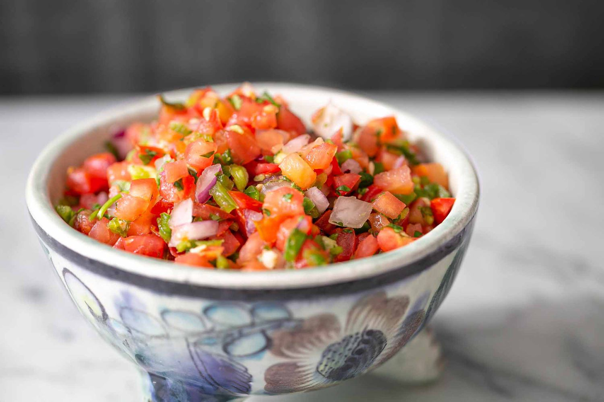

Step1:
Ingredients:
- 2 boneless chicken breasts
- 1 teaspoon of cumin
- 1/2 cup olive oil
- 4 minced garlic

- 1 teaspoon dried oregano
- 2 teaspoon kosher salt
- 1 teaspoon black pepper

- 1 tablespoon chili powder
- 1 7 ounces of chipotle pepper in adobo sauce
Step2:
Ingredients:
- 1 cup cooked rice

- 1/2 cup black beans, cooked

- 1 pack of guacamole
- 1/2 cup tomato salsa

Instructions:
- In a bowl, marinate the chicken with all of these ingredients.
Instructions:
- Grill the chicken until fully cooked and then slice it.
- In a bowl, layer rice, black beans, lettuce(I don't like it so I didn't list it), and grilled chicken.
- Top with salsa and guacamole.
- Enjoy your delicious Chipotle Chicken Bowl!